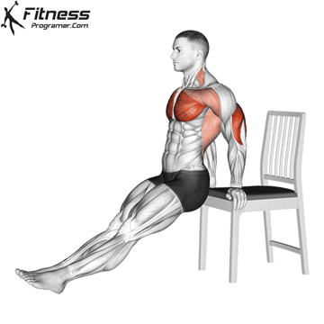

1 - Rosca Direta com Halteres (ou garrafas de água)
Execução: Segure um peso em cada mão, com os braços ao lado do corpo e as palmas das mãos voltadas para a frente. Dobre os cotovelos, trazendo os pesos em direção aos ombros, depois abaixe devagar.
Dica: Evite balançar o corpo; mantenha os cotovelos próximos ao tronco para focar no bíceps.
2 - Rosca Martelo
Execução: Segure os pesos com as palmas voltadas para dentro, mantendo os braços ao lado do corpo. Flexione os cotovelos para levantar os pesos até os ombros, depois abaixe devagar.

Dica: Esse movimento trabalha tanto o bíceps quanto o braquial, um músculo que ajuda a dar volume ao braço.
3 - Extensão de Tríceps com Halteres (ou garrafa de água) acima da cabeça
Execução: Segure um peso com as duas mãos acima da cabeça, com os cotovelos dobrados. Estenda os braços para cima, depois abaixe devagar até a posição inicial.
Dica: Mantenha os cotovelos próximos à cabeça e os ombros relaxados para evitar sobrecarga.
4 - Tríceps no Banco (ou cadeira)
Execução: Apoie as mãos em um banco ou cadeira atrás de você, com as pernas estendidas à frente. Abaixe o corpo dobrando os cotovelos, depois empurre-se para cima até estender os braços.
Dica: Quanto mais as pernas estiverem estendidas, mais difícil será o exercício. Flexionar os joelhos facilita o movimento.